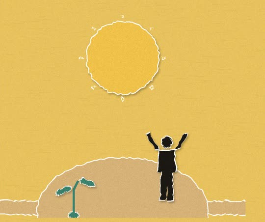
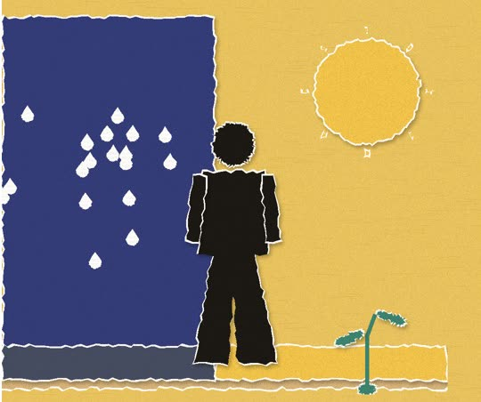
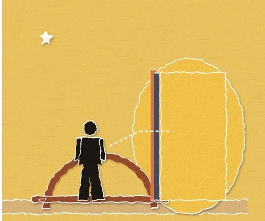
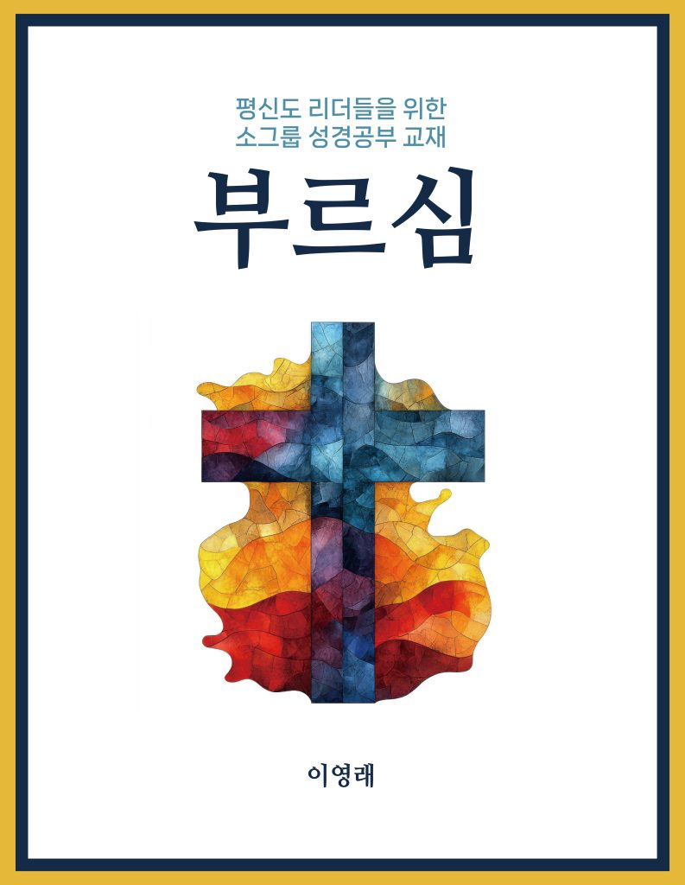

시애틀 시온장로교회는 시애틀에 있는 한인교회입니다.
말씀
질문으로 만나는 설교
질문에 답해 보고, 그 답이 담긴 설교를 들어 보세요.
질문으로 만나는 설교
요즘 이런 적 있나요?
2개 이상이면, 끝까지 보세요
0 / 4

이걸 '자기 효능감'이래요
할 수 있다는 마음이 행동을 만든다는 거예요

된다고 외치며 걸어간 사람은 달라졌어요
말과 태도가 결과까지 바꿔요

이 마음, 어떻게 가질 수 있을까
나머지는 설교에서
이 질문의 답은 설교에 있어요.
최근 질문 · 1개
말씀 배경화면 · 1장
카드를 누르면 휴대폰 배경화면 크기 원본이 열립니다. 사랑하는 이들에게도 나눠 주세요.

소그룹 성경공부 교재, 부르심
이영래 목사 · 평신도 리더들을 위한 소그룹 성경공부 · 6과
eBook 내려받기 (ePub) · Apple Books, ReadEra 등 전자책 앱에서 열람
이번 주일, 함께 예배해요.주일예배 오전 10:45 · 본당 · 17920 Meridian Ave N, Shoreline, WA 98133
예배 안내